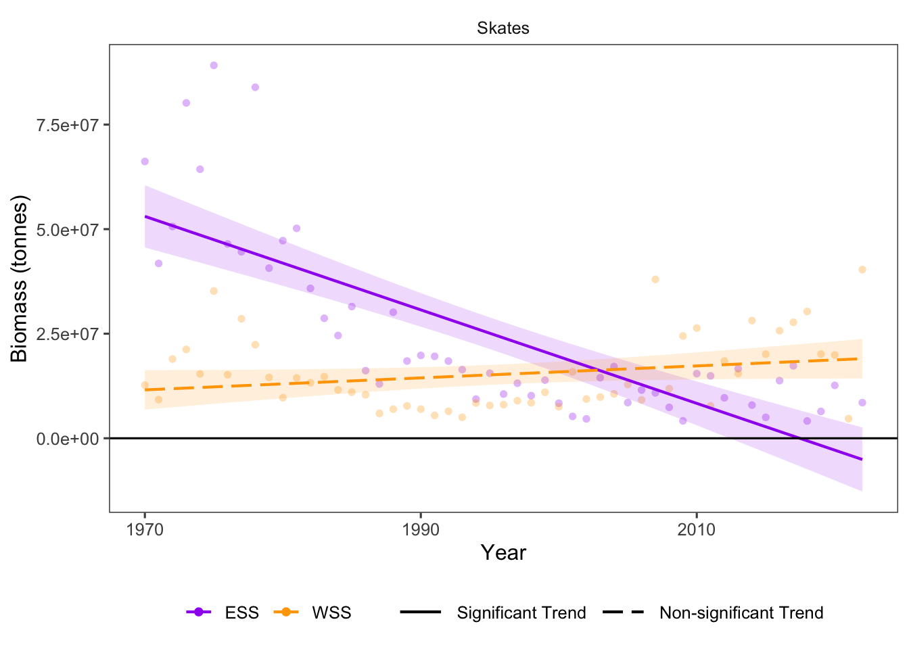

22 Resource Potential: Indicator Species
Data Type: Tabular Data (within eco_indicators)
Spatial Scope: Maritimes
Duration 1970-2022
Source: Bundy et al. 2017
22.1 Introduction to Indicator
Biomass of indicator species represents long-term changes to an ecosystem (Bundy, Gomez, and Cook 2017). In the Scotian Shelf region, skates can serve as an indicator species for community resource potential. Because skates are long-lived and not directly targeted by fisheries, changes in skate populations represent broader shifts in community productivity occurring across long timescales.
22.2 View Data
library(tidyr)
library(plotly)
library(stringr)
plotly_df <- data@data %>% inner_join(global_cols2)
p <- plot_ly()
regions_order <- c("4VN","4VS","4W","4X")
for(r in regions_order){
df_sub <- plotly_df %>% filter(region == r)
group_name <- unique(df_sub$region_group)
p <- p %>%
add_lines(
data = df_sub,
x = ~year,
y = ~BIOMASS_SKATES_value,
name = r,
legendgroup = group_name,
legendgrouptitle = list(
text = ifelse(group_name == "ESS",
"Eastern Scotian Shelf Zones",
"Western Scotian Shelf Zones"
)
),
line = list(color = unique(df_sub$color), width = 2),
hovertemplate = paste0("<b>", r,":</b> ","%{y:,.2s}<extra></extra>"
))
}
p %>%
layout(
title = "Biomass of Skates by Region",
xaxis = list(title = "Year"),
yaxis = list(title = "Biomass Skates (tonnes)", fixedrange = TRUE),
hovermode = "x unified",
legend = list(
tracegroupgap = 5,
groupclick = "toggleitem",
itemdoubleclick = FALSE
)
) %>%
config(displayModeBar = FALSE)Figure 22.1: Biomass of indicator species in Scotian Shelf regions; 1970-2022. Click legend to toggle regions.
22.3 Summary and Trends
Trend and summary values are automatically generated; data were last updated on marea package install on 2026-02-10
Resource potential of indicator groups (skates) has shown different trends by region (Fig. 22.1).
Biomass of skates has significantly decreased in the Eastern Scotian Shelf and non-significantly increased in the Western Scotian Shelf over the sampling duration (1970-2022) (Fig. 22.2).

Figure 22.2: Overall Biomass trends for taxonomic and functional groups overtime.
22.3.1 Summary Table by Region and Functional Group
Trends in biomass of indicator species (skates) over time for each guild and each NAFO region within the Eastern and Western Scotian Shelf (1970-2022) are shown in the table below (Table 22.1).
| taxon | Eastern Scotian Shelf Biomass Trends (tonnes/year) | Western Scotian Shelf Biomass Trends (tonnes/year) |
|---|---|---|
| Skates |
4VN: -5.91e+03 4VS: -7.08e+05 ∗ 4W: -3.23e+05 ∗ ESS: -1.11e+06 ∗ |
4X: 1.43e+05 WSS: 1.43e+05 |
22.4 Relevance to Research and Stock Assessments
While skates are not currently targeted as a major fishery in Atlantic Canada, their population changes may serve as a “canary in the coal mine” for the greater ecosystem (Bundy, Gomez, and Cook 2017). Changes to skate populations may therefore be relevant to monitoring the overall health of marine ecosystems in Atlantic Canada.
22.5 Variable Definitions
| variable | description | unit |
|---|---|---|
| year | Year of data collection | |
| region | Region over which data are summarized | |
| BIOMASS_SKATES_value | Biomass of skates within regions | tonnes |